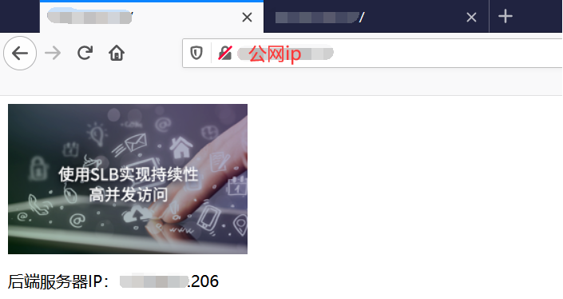
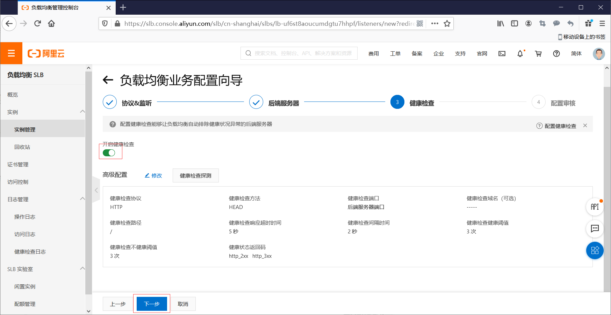

阿里云SLB负载均衡实践
基于阿里云ECS和SLB实现负载均衡
SLB简介
负载均衡（Server Load Balancer）是将访问流量根据转发策略分发到后端多台云服务器（ECS实例）的流量分发控制服务。负载均衡扩展了应用的服务能力，增强了应用的可用性。
负载均衡通过设置虚拟服务地址，将添加的ECS实例虚拟成一个高性能、高可用的应用服务池，并根据转发规则，将来自客户端的请求分发给云服务器池中的ECS实例。
负载均衡默认检查云服务器池中ECS实例的健康状态，自动隔离异常状态的ECS实例，消除了单台ECS实例的单点故障，提高了应用的整体服务能力。此外，负载均衡还具备抗DDoS攻击的能力，增强了应用服务的防护能力。
架构
负载均衡服务主要有三个核心概念：
负载均衡实例 （Server Load Balancer instances）
一个负载均衡实例是一个运行的负载均衡服务，用来接收流量并将其分配给后端服务器。要使用负载均衡服务，您必须创建一个负载均衡实例，并至少添加一个监听和两台ECS实例。
监听 （Listeners）
监听用来检查客户端请求并将请求转发给后端服务器。监听也会对后端服务器进行健康检查。
后端服务器（Backend Servers）
一组接收前端请求的ECS实例。您可以单独添加ECS实例到服务器池，也可以通过虚拟服务器组或主备服务器组来批量添加和管理。
开通资源
阿里云SLB负载均衡，免费开通体验。
左侧显示相关资源信息。

查看云服务器状态
打开浏览器，访问两台ECS服务器地址，查看状态。

负载均衡配置
点击左侧导航栏处的 云产品资源 查看资源信息，点击 一键复制url，用浏览器登录控制台。
输入实验提供的 子用户名称 和 子用户密码 ，完成后点击 登录 。登录阿里云管理控制台。
在产品与服务中搜索负载均衡，选择弹性计算下的负载均衡。
- 选择华东2（上海），选择实例 -》实例管理，点击点我开始配置。
- 通过负载均衡业务配置向导，配置负载均衡的 监听端口、后端服务器 和 健康检查
1）、在 后端服务器 页面，监听请求转发至 默认服务器组，在已添加服务器处点击 继续添加 。
2）、在弹出的待添加服务器页面，在预先配置好的两台云服务器前打勾选择，然后点击下一步，之后再点击 添加；
3）、设置端口号为80，下一步。

- 刷新负载均衡实例查看状态。
访问测试
权重相同
此时，两台后端服务器的权重比例相同。
在控制台点击左侧 实例管理 ，在右侧页面中的红框处看到负载均衡的 服务地址（也就是 云产品资源 提供的 负载均衡 的 IP地址）。
在浏览器中新建页面，并访问 负载均衡 的 服务地址 。界面显示的 后端服务器IP 为 云服务器ECS-1（或 云服务器ECS-2） 的 内网地址 。
刷新 浏览页面，显示的 后端服务器IP 将发生变化，变为 云服务器ECS-2（或 云服务器ECS-1）的 内网地址 ；
说明：界面显示的地址为内网地址，这是因为负载均衡访问后端ECS实例，是通过内网访问的。
重复刷新操作，观察 后端服务器IP 是在两个云服务器的 内网地址 间轮流更换，可以减轻单台服务器的负载压力，从而确保业务的持续性。
权重不同
修改后端服务器权重，验证负载均衡向后端服务器发送请求的比例是按照权重的比例调整的。
进入实例管理 页面，点击该实例的 默认服务器组 ；
选中 已添加的服务器 ，列表中，勾选下方的勾选框 ，然后点击 修改权重 ；
返回已添加的服务器的页面，查看到两台 ECS实例 的权重分别为 30 和 90 ，并记录对应的 ECS实例 内网地址。

浏览器中，刷新多次负载均衡 服务地址 的页面，并记录页面显示的 后端服务器IP 。可以发现：每 4 次刷新，将有 3 次访问 权重 为 90 的 ECS实例，1 次访问权重为 30 的 ECS实例。
结果：证明用户可以根据实际情况调整负载均衡器的请求分发，一般将配置高的服务器设置的权重调高，配置较低的服务器设置的权重调低。这样可以避免在高并发时，配置较低的服务器因为压力较大服务异常的发生。
模拟宕机
首先开启负载均衡的 会话保持 功能。
1）点击左侧 监听 ，监听页面点击右侧的 修改监听配置 。
2） 配置监听页面的 高级配置 处，点击 修改 ；
3）开启 会话保持 ，超时时间 输入 180 （即 3 分钟）；完成后点击 下一步
4）下面的 后端服务器、健康检查 和 配置审核 页面都采用默认值 ，依次完成配置。
返回到 监听 页面 ，会话保持 状态 已开启 。
再次在浏览器中输入 负载均衡 的 IP地址 ，多次刷新，发现在会话保持的超时时间内请求只会分发到某一台 ECS 上（究竟是哪一台 ECS 没有规定），时间超出后，重新按照权重比例分发。
我们关掉刚才访问的那台机器。
返回负载均衡管理控制台，在默认服务器组页面中点击右上角的【刷新】，页面刷新后被停止的 ECS 的 状态 变为 已停止。监听 页面，也出现 异常 提示 。
点击左上角的 【实例管理 】，返回负载均衡管理控制台主页面，异常 报警也会出现。
再次刷新浏览器中 负载均衡 的 IP地址 ，此时，请求发送到 健康检查状态 为 正常 的ECS上。
结果：当某一台 ECS 出现异常后，负载均衡会自动将请求发送到健康检查状态正常的 ECS 上。